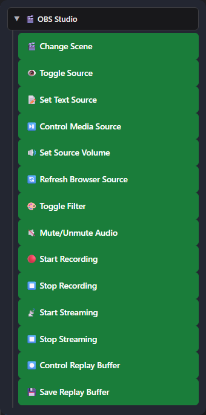
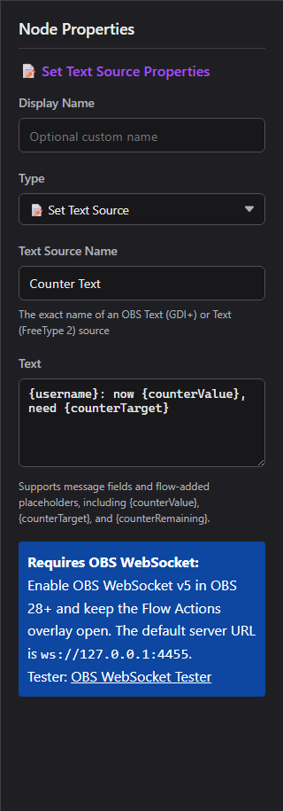

1. Connect Flow Actions to OBS
OBS WebSocket v5 is built into OBS 28 and newer. Social Stream Ninja uses it for full OBS control and media events.
- In OBS, open Tools → WebSocket Server Settings.
- Enable the WebSocket server. Keep the default port
4455; set a password if wanted. - In Social Stream Ninja, open the Flow Actions section and set the OBS WebSocket URL and optional password.
- Copy the Flow Actions URL and keep it open. An OBS Browser Source is recommended for overlay/audio actions.
- Use the OBS WebSocket Tester to confirm the connection before building a flow.
https://socialstream.ninja/actions.html?session=YOUR_SESSION&obsws=ws://127.0.0.1:4455Add
&obspw=YOUR_PASSWORD only when OBS requires authentication. Add &obsdebug=1 to show a small connection-status badge while diagnosing problems.
Two OBS connection modes
| Mode | What it supports | Requirement |
|---|---|---|
| OBS WebSocket v5 | Every trigger and action in this guide. | OBS 28+, WebSocket server enabled, Flow Actions page open. |
| OBS Browser Source API | Fallback for scene changes, start/stop streaming, start/stop recording, and saving replay buffer. | Flow Actions loaded inside OBS with Advanced Access Level. Source, filter, text, volume, media, refresh, and media-ended features still require WebSocket. |
2. Add OBS nodes to a flow
- Open the Event Flow Editor and create or edit a flow.
- Drag a trigger onto the canvas.
- Expand OBS Studio in the Actions list and drag in the OBS action you need.
- Connect the trigger to the action, configure the exact OBS scene/source names, save, and enable the flow.

3. OBS triggers
These start a flow when OBS reports a matching event. They arrive as type: "obs"; OBS-specific details are under meta.
| Trigger | When it fires | Useful data |
|---|---|---|
| OBS Stream Started | Streaming reaches the started state. | meta.outputState, meta.outputActive |
| OBS Stream Stopped | Streaming reaches the stopped state. | meta.outputState, meta.outputActive |
| OBS Recording Started | Recording starts. | meta.outputState |
| OBS Recording Stopped | Recording stops. | meta.outputState |
| OBS Scene Changed | The active program scene changes. | meta.sceneName |
| OBS Media Ended WebSocket | A media input finishes playback. Optionally filter by exact Media Source Name. | meta.inputName, meta.inputUuid |
| OBS Replay Buffer Saved | OBS finishes saving a replay. | meta.savedReplayPath |
4. OBS actions
| Action | Configuration and behavior | Connection |
|---|---|---|
| Change Scene | Switches the active program scene by exact scene name. | WebSocket or Browser Source API fallback |
| Toggle Source | Show, hide, or toggle a scene item. Scene and Group are optional targeting fields. | WebSocket |
| Set Text Source | Updates Text (GDI+) or Text (FreeType 2), with template placeholders. | WebSocket |
| Control Media Source | Play/resume, pause, restart, stop, next, or previous. | WebSocket |
| Set Source Volume | Sets an input from -100 to +26 dB. | WebSocket |
| Refresh Browser Source | Reloads a Browser Source without cache. | WebSocket |
| Toggle Filter | Enable, disable, or toggle a named source filter. | WebSocket |
| Mute/Unmute Audio | Mute, unmute, or toggle an input. | WebSocket |
| Start Recording | Starts OBS recording. | WebSocket or Browser Source API fallback |
| Stop Recording | Stops OBS recording. | WebSocket or Browser Source API fallback |
| Start Streaming | Starts the configured OBS stream output. | WebSocket or Browser Source API fallback |
| Stop Streaming | Stops the OBS stream output. | WebSocket or Browser Source API fallback |
| Control Replay Buffer | Start, stop, or toggle the replay buffer. | WebSocket |
| Save Replay Buffer | Saves the currently running replay buffer. | WebSocket or Browser Source API fallback |
Set Text Source and flow variables
The text field supports normal message placeholders such as {username}, {message}, {source}, and {donation}, plus values added by earlier flow nodes such as {counterValue}, {counterTarget}, and {counterRemaining}.
{username}: now {counterValue}, need {counterTarget}
Media Source controls
Play / Pause
Play resumes paused media. Pause holds its current position.
Restart / Stop
Restart starts from the beginning. Stop ends playback and resets the input.
Next / Previous
Moves through playlist-capable inputs, such as VLC Video Source. A single-file Media Source may ignore these actions.
Volume, mute, and filters
Set Source Volume uses dB, matching the OBS mixer scale: 0 dB is unchanged gain, negative values are quieter, and -100 dB is effectively silent. Mute is a separate state. Toggle Filter changes only the enabled state of an existing filter; it does not edit filter settings.
Replay Buffer
First enable Replay Buffer in OBS Settings → Output. Use Control Replay Buffer to start/stop it, then Save Replay Buffer to write the recent buffered segment to disk.
5. Useful recipes
Counter text in OBS
Place Set Text Source after the counter/check path and use:
{username}: now {counterValue}, need {counterTarget}
Run something after a video
OBS Media Ended (filter to Intro Video) → Change Scene to Main.
Chat-controlled media restart
Message Equals !replayintro → permission condition → Control Media Source: Restart.
Refresh an alert page
Message Equals !refreshalerts → moderator condition → Refresh Browser Source.
Duck music for an alert
Set Source Volume to -24 dB → alert action → Delay → restore to 0 dB.
Replay workflow
OBS Stream Started → Control Replay Buffer: Start; a separate trusted command runs Save Replay Buffer.
6. Other built-in OBS controls
Social Stream Ninja also has older OBS Browser Source controls in the Streaming Chat dock. These do not use the Flow Actions WebSocket bridge.
| Option | What it does | Requirement |
|---|---|---|
| Current OBS scene indicator | Shows the active scene in the Streaming Chat dock. | Dock loaded inside OBS with read permission. |
| Guests can use !cycle | Cycles to the next OBS scene, rate-limited to once per 10 seconds. | Enable the popup option; dock loaded inside OBS with Advanced access. |
| Privileged users can use !start / !stop | Starts or stops streaming from trusted chat users. | Enable the popup option; dock loaded inside OBS with Full/Advanced control permission. |
| Remote OBS control panel | Displays scenes and can switch scenes or toggle streaming/recording when the target OBS dock grants the required control level. | Streaming Chat dock paired to a dock running inside OBS. |
| OBS WebSocket Tester | Checks version, connection, scenes, and individual requests before using Event Flow. | Open tester |
7. Troubleshooting
| Problem | Check |
|---|---|
| Nothing happens | Flow is saved and enabled; Flow Actions is open; both use the same session ID. |
| OBS will not connect | WebSocket server is enabled, URL is ws://127.0.0.1:4455, and password matches. Port 4444 is the obsolete v4 default. |
| Scene/source/filter is not found | Copy the exact OBS name. For visibility, set Scene or Group when the item is nested or outside the current scene. |
| Text does not change | Use Text (GDI+) or Text (FreeType 2), confirm the input name, and disable Read from file. |
| Media Ended never fires | Use OBS WebSocket v5 and a real media input. Looping media does not reach an ended state. |
| Next/Previous does nothing | Use a playlist-capable source such as VLC Video Source. |
| Replay save fails | Enable Replay Buffer in OBS Output settings and start it before saving. |
| Actions stop when a scene changes | Disable Shutdown source when not visible on the Flow Actions Browser Source, or keep the page open elsewhere. |
GetVersion → confirm scenes/inputs → test the individual request → test the full Event Flow.